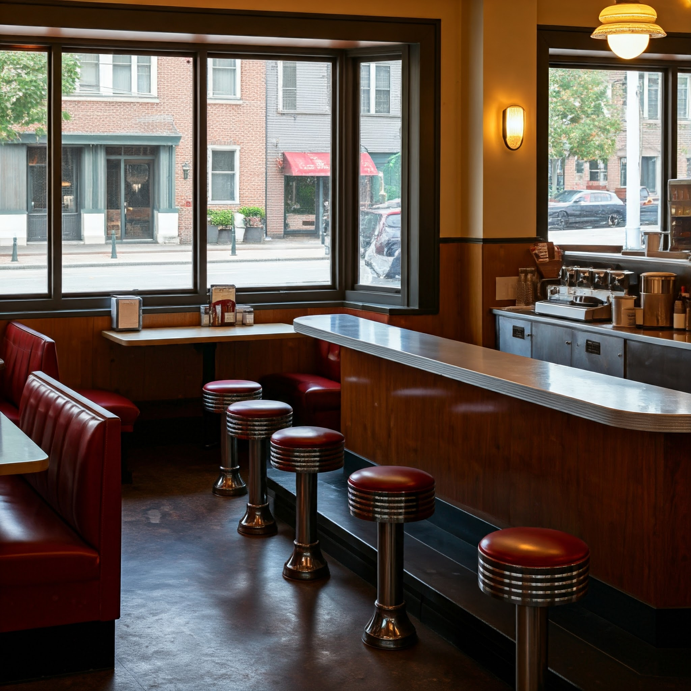

About Us
A Queen Anne neighborhood fixture since 1962, Delicious Eats Diner serves classic American comfort food with a modern twist. Our vintage chrome and vinyl booths set the scene for innovative dishes that honor traditional diner culture while embracing contemporary flavors.
Under Chef Kai's leadership, we craft beloved classics using locally sourced, seasonal ingredients from our Pacific Northwest neighbors. From our signature cheeseburger to house-made clam chowder, each dish balances comfort with quality. Our menu features both traditional favorites and creative plant-based options, ensuring there's something for everyone.
More than just a restaurant, we're a community gathering place where good food meets warm hospitality. Stop by for a vanilla milkshake, bring friends for dinner, or treat yourself to a slice of our famous key lime pie – there's always a seat waiting for you at Delicious Eats.
Our Hours
Monday - Friday: 9am - 9pm
Saturday - Sunday: 10am - 10pm
We invite you to become part of our story. Join us at Delicious Eats Diner, where yesterday's charm meets today's flavors in every bite.